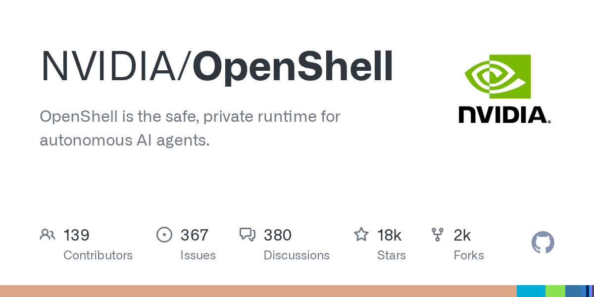

Автономным ИИ-агентам для полезной работы нужны файлы, установка пакетов, вызовы API и учётные данные — и именно поэтому они так опасны: любой скомпрометированный агент может унести секреты или наделать дел от имени владельца. NVIDIA предлагает компромисс: агент получает эти возможности, но никогда не видит настоящие креды и не выходит за объявленную политику. Решение называется OpenShell, распространяется под лицензией Apache 2.0 и уже набрало на GitHub более 16,5 тысячи звёзд.
Механика опирается на два принципа. Первый — enforcement на уровне ядра: каждый агент сидит в изолированной песочнице, которая ограничивает доступ к файлам и системные вызовы, а каждое сетевое соединение проходит проверку по политике до выхода наружу. Настоящие ключи и токены агенту не показываются — OpenShell подставляет их только в запросы, адресованные одобренным эндпоинтам. Второй принцип — формальная верификация: прежде чем применить изменение политики, система доказательно проверяет, какие новые риски оно открывает (например, выход на новый хост с кредом), и такие изменения ставятся в очередь на человеческое одобрение.
В новостной комнате NVIDIA анонсировала платформу Open Agent Safety Platform 28 сентября 2026 года: OpenShell переведён в статус broadly available, вокруг него собраны индустриальные партнёры, исследователи и госорганизации для выработки практик безопасного развёртывания агентов. Сейчас вышла ветка 0.1.x со стабильным релизным циклом, новыми примитивами изоляции и расширенной поверхностью расширений. Есть CLI, SDK на Python, TypeScript, Go и Rust, деплой на Kubernetes через Helm, а также публичные «скиллы», обучающие кодинг-агента управлять самим OpenShell. Телеметрия по умолчанию анонимная (только категории и счётчики) и отключается одной переменной.
Последние месяцы лента полна историй об агентах, которые сливали память, сами отключали себе предохранители и лезли в банковские счета. OpenShell — первый мейнстримный инструмент, который переносит вопрос «как доверять агенту» из плоскости промптов в плоскость операционной системы: доверие определяется политикой, которую машина проверяет на каждом шаге, а не вежливой просьбой в системном сообщении. Для тех, кто уже запускает агентские парки в проде, это редкий случай, когда безопасник и инженер согласны в одном инструменте.